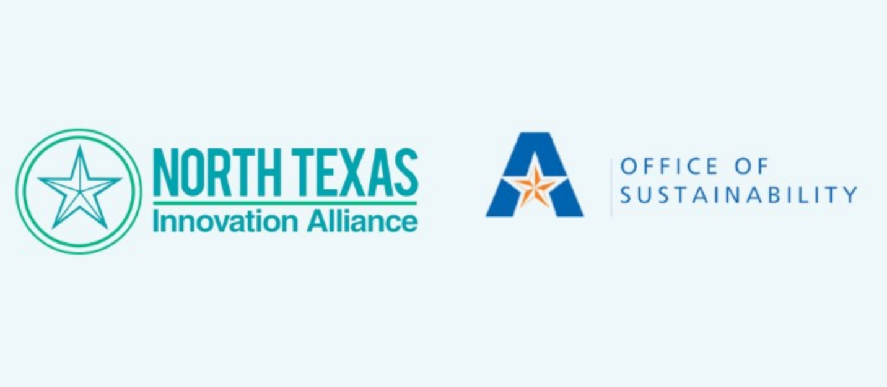
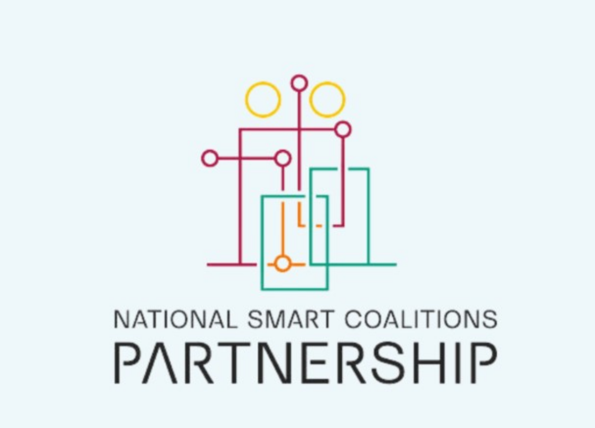
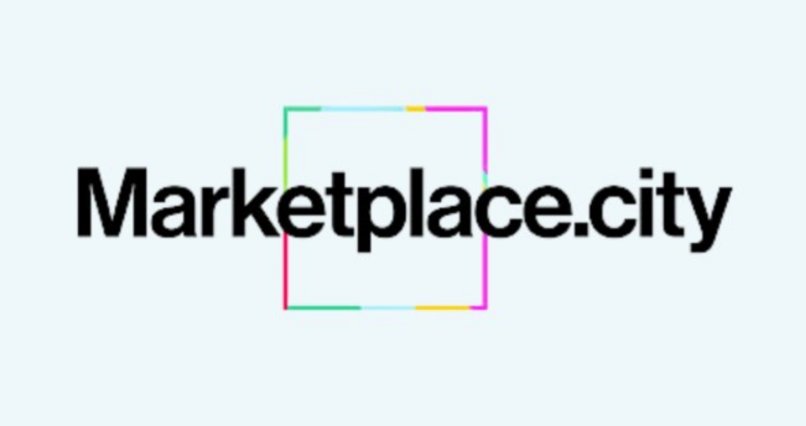
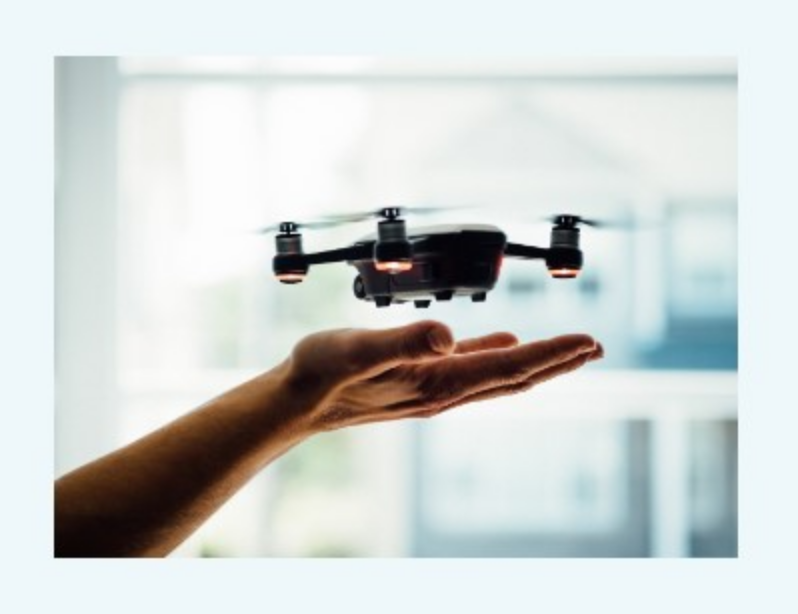
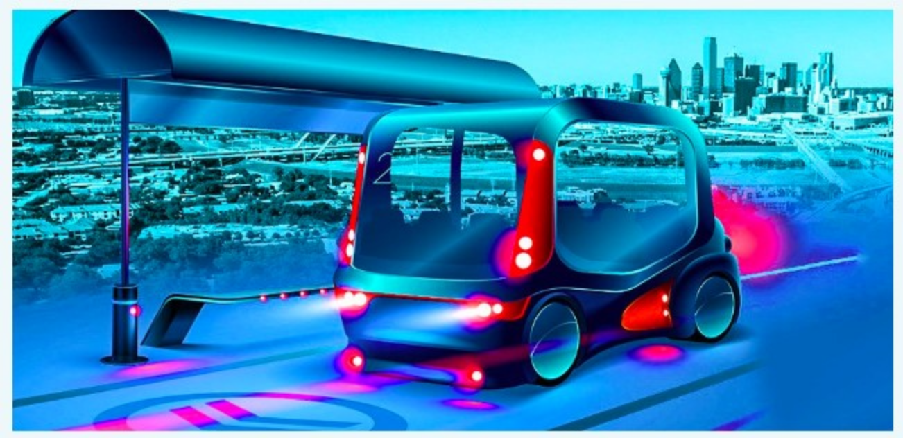

North Texas Innovation Alliance Lead Partners
The Concept: Taking an interdisciplinary approach to bring the multiple perspectives
necessary to solve pressing issues for our organizations and residents. Through working
across specialty and department, bringing 360 insights in developing solutions will
bring ‘complete solutions’ for host organizations.
Program Vision: The Urban Resilience Fellows program will connect teams of students from
higher education institutions across DFW with a community partner from local government or
industry to develop innovative solutions to a pressing local issue.
We are thrilled we will soon be able to share the organizations to sign-on to host the first cohort
of our Urban Resilience Fellows!
If your organization is interested in learning more please reach out to Yumna
Bham (ybham@ntxia.org) to learn more
In 2021, NTXIA was a founding member of the NSCP in an effort to move quickly
on common goals across the country. The mission of the National Smart Coalitions
Partnership is to broaden partnerships, resources and initiatives that are currently
helping individual communities in their respective areas to deploy smart city
technologies. As a multi-state association, the National Smart Coalitions Partnership
aims to bridge gaps between local and regional technology efforts within specific
states and transform them into multi-state collaborative endeavors. More at
www.smartcoalitions.org
 Call for Innovation initiative- What’s
Next?
Research Partnerships: North Texas
Center for Mobility Technologies
As the public sector seeks to understand new and emerging technologies
and their potential to bring ROI to their constituents, finding new ways to learn and
expose them to the broader landscape and learning in real-time what these
implementations could look like are an area ripe for innovation.
Enter the Call for Innovation initiative, which collects problem statements from
multiple departments, or multiple organizations, to release a call to understand
the market in various stages of maturity. Companies shortlisted are invited to
demonstrate their solutions live and in-person to key stakeholders.
The response from NTXIA’s first Call for Innovation & Demo Day with Dallas
County in Summer 2023 was so well received, we're already thinking about the
possibilities for future Calls with our members. If you're interested in exploring
this program and agile process, please reach out - more to come on some of
those in development already!
Research partnerships are a cornerstone of regional innovation and training the next
generation of urban technologists. The NTXIA supports the North Texas Center for Mobility
Technologies and works to leverage the coordinated expertise of Dallas-Fort Worth research
universities to tackle mobility technology challenges across Texas, nationally, and globally.
NTCMT is a program of the Texas Research Alliance (TRA).
  